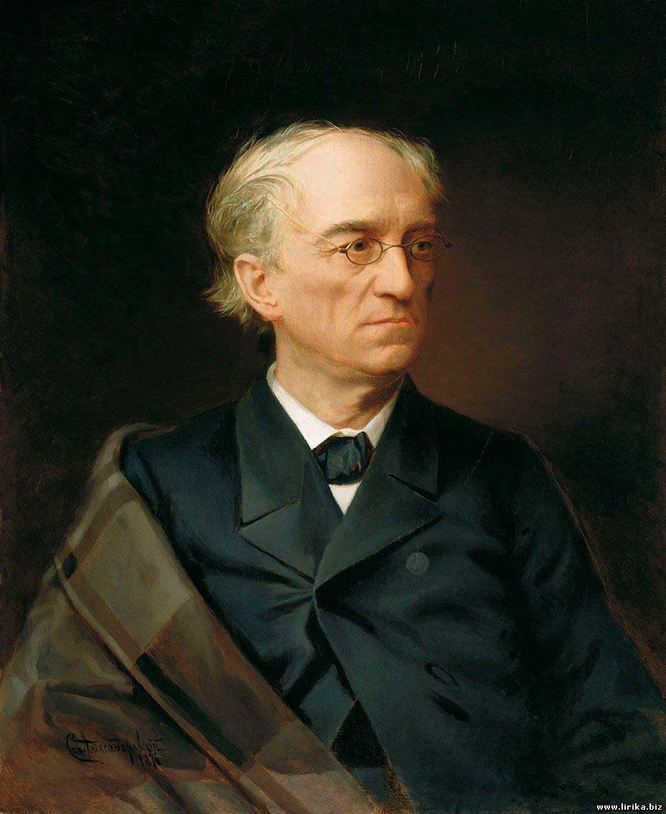

Ф. И. Тютчев: поэзия бездны и «чистое искусство»
Жизнь, мировоззрение и философия поэта
Эскиз эпохи: дипломат и поэт между Петербургом и Мюнхеном
Пропорции 3 : 4Дипломат вне времени
Тютчев жил в эпоху, когда литература спорила: должен ли поэт бороться за права народа или служить только красоте. Сам он 22 года провёл в Европе на дипломатической службе и смотрел на Россию и мир со стороны — глазами мыслителя, а не политика.
«Чистое искусство»: Тютчев стал одним из главных символов «чистого искусства». Суть этого направления проста: стихи не обязаны решать социальные проблемы или учить жить. Главная цель поэзии — ловить мимолётную красоту мира и заглядывать в тайны человеческой души.
Набросок дуализма: золотой покров Дня над бездной Ночи
Пропорции 3 : 4Космос против Хаоса
В основе взглядов Тютчева лежит вечное столкновение двух сил:
- — День (Космос) — это привычный порядок, свет и иллюзия безопасности. Днём человеку кажется, что он всё контролирует.
- — Ночь (Хаос) — это древняя, пугающая стихия и бесконечная бездна, где человек остаётся один на один со Вселенной.
- — Человек у Тютчева — это «мыслящий тростник». Он физически хрупок перед лицом огромной природы, но велик тем, что способен осознавать и чувствовать этот мир.
Автограф «Silentium!»: перо, застывшее перед тайной души
Пропорции 3 : 4«Silentium!» (Молчание), 1830
«Как сердцу высказать себя? / Другому как понять тебя? / Поймёт ли он, чем ты живёшь? / Мысль изреченная есть ложь».
Разбор: Стихотворение звучит как призыв закрыться от внешнего шума. Тютчев доказывает: наш внутренний мир настолько глубок и сложен, что любые слова его упрощают и искажают. Как только ты пытаешься пересказать своё настоящее чувство вслух, оно теряет свою суть. Истинная жизнь души возможна только в тишине.
Одухотворённый пейзаж: дыхание и голос живой природы
Пропорции 3 : 4«Не то, что мните вы, природа...», 1836
«Не слепок, не бездушный лик — / В ней есть душа, в ней есть свобода, / В ней есть любовь, в ней есть язык...»
Разбор: Здесь Тютчев спорит с теми, кто видит в природе только набор физических законов и ресурсов. Для поэта природа — живое, разумное существо со своим характером и голосом. Проблема не в том, что мир вокруг глух и нем, а в том, что современные люди разучились его слышать и чувствовать.
Символы поэтики: Гроза, Океан и головокружительная Бездна
Пропорции 3 : 4Как устроен язык Тютчева
- — Контрасты (антитезы): весь мир поэта строится на резких противопоставлениях — свет и тьма, день и ночь, тишина и буря.
- — Торжественный слог: Тютчев часто использует устаревшие высокие слова (глас, лазурь, бездна), чтобы придать стихам масштаб и звучание древнего пророчества.
- — Ключевые символы: Гроза (момент, когда земля и небо встречаются), Океан (бесконечность жизни), Бездна (тайна бытия, от которой кружится голова).
«Мыслящий тростник» наедине с бесконечной Вселенной
Пропорции 3 : 4Почему Тютчева называют поэтом-философом?
Обычный поэт-пейзажист просто любуется закатом или грозой. Тютчев же через картину природы всегда задаёт вечные вопросы: что такое человек? Почему мы чувствуем себя одинокими в огромном мире? Где граница между жизнью и смертью?
Его стихи — это не зарисовки с натуры, а попытка разгадать устройство Вселенной через собственные переживания.
Открытая книга: тишина души в эпоху информационного шума
Пропорции 3 : 4Зачем читать это сегодня
Вывод: Тютчев опередил своё время — именно из его стихов позже вырос весь русский символизм. Он доказал, что разговоры о душе и вечности важнее сиюминутных новостей.
Мнение группы: Стихи Тютчева удивительно попадают в наше время. В мире соцсетей, где принято выставлять напоказ каждый шаг и каждую эмоцию, его мысль о том, что самое важное в человеке нужно беречь в тишине, звучит как никогда актуально.
Пауза для размышления: вопросы, остающиеся после стихов
Пропорции 3 : 4Подумаем вместе
-
1.
Согласны ли вы со строчкой «Мысль изреченная есть ложь»? Действительно ли слова портят глубокие чувства, или без общения мы бы не поняли самих себя?
-
2.
Как вы думаете, может ли искусство сегодня оставаться «чистым» (только ради красоты), или художник обязан реагировать на то, что происходит в обществе и политике?
Madi
Aidai
Bilal
Kani
Akmaral
Damir